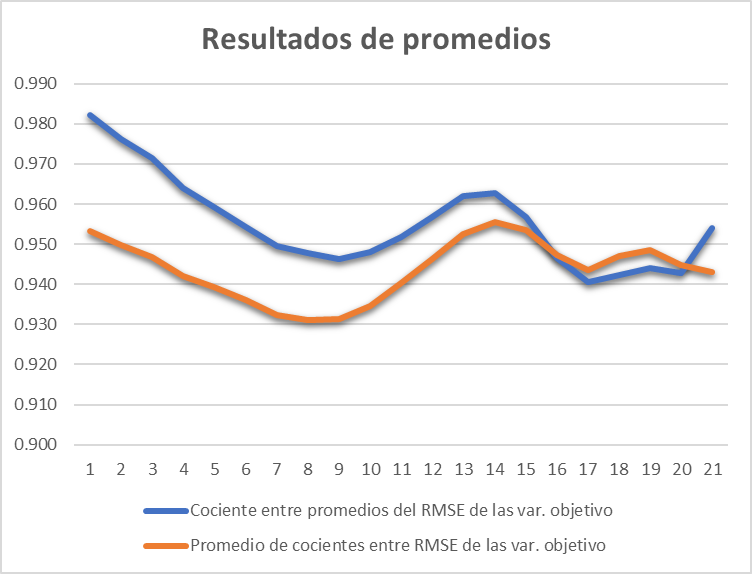

Comparación entre el modelo SVAR50_4B y SVAR50_AR1
Introducción
El objetivo de este documento es comparar concretamente los principales resultados de comparar el modelo SVAR50_4B y una variación del modelo con una matriz de restricción diferente, que represente un proceso autoregresivo de orden 1 para cada una de las variables (SVAR50_AR1).
Metodología
Las especificaciones generales para ambos modelos son que, la realización de la evaluación es fuera de muestra. Las fechas con las que se modeló van desde 2005Q1 hasta 2023Q4.
Variables endógenas
Ambos modelos cuentan con las siguientes variables endógenas y con el mismo ordenamiento:
- Tasa de Variación Interanual del PIB de EEUU:
d4_ln_y_star - Tasa de Variación Interanual del Índice de Precios de Transables:
d4_ln_ipei - Tasa de Interes de fondos federales:
i_star - Inflacion No Subyacente Interanual:
d4_ln_cpi_nosub - Tasa de Variación Interanual del PIB de Guatemala:
d4_ln_y - Inflación Subyacente Optima MSE Interanual:
d4_ln_cpi_sub - Tasa de Variación Interanual del Tipo de Cambio Nominal:
d4_ln_s - Tasa de Variación Interanual de la Base Monetaria:
d4_ln_bm - Tasa de Interes Lider de Politica Monetaria:
i
Variables objetivo:
- Tasa de Variación Interanual del PIB de Guatemala:
d4_ln_y - Inflación Subyacente Optima MSE Interanual:
d4_ln_cpi_sub - Tasa de Variación Interanual del Tipo de Cambio Nominal:
d4_ln_s - Tasa de Interes Lider de Politica Monetaria:
i
Matriz de restricción de SVAR50_4B
La principal distinción entre modelos es la matriz de restricciones para el modelo SVAR50_4B es \[ \small \begin{pmatrix} NaN& NaN&0 & 0& 0& 0& 0& 0& 0& 0\\ NaN& 0& NaN& 0& 0& 0& 0& 0& 0& 0\\ NaN& 0& 0& NaN& 0& 0& 0& 0& 0& 0\\ NaN& 0& 0& 0& NaN& 0& 0& 0& NaN& 0\\ NaN& 0& 0& 0& 0& NaN& 0& 0& NaN& 0\\ NaN& 0& NaN& 0& 0& 0& 0.9& 0& NaN& 0\\ NaN& 0& 0& 0& 0& 0& 0& NaN& NaN& NaN\\ NaN& 0& 0& 0& NaN& 0& 0& 0& NaN& NaN\\ NaN& 0& 0& NaN& NaN& 0& NaN& 0& NaN& NaN\\ \end{pmatrix} \] donde \(NaN\) son los parámetros libres que se estiman.
Matriz de restricción de SVAR50_AR1
Mientras que para el AR_1 es simplemente la matriz con la diagonal libre y ceros en el resto.
\[ \small \begin{pmatrix} NaN& NaN&0 & 0& 0& 0& 0& 0& 0& 0\\ NaN& 0& NaN& 0& 0& 0& 0& 0& 0& 0\\ NaN& 0& 0& NaN& 0& 0& 0& 0& 0& 0\\ NaN& 0& 0& 0& NaN& 0& 0& 0& 0& 0\\ NaN& 0& 0& 0& 0& NaN& 0& 0& 0& 0\\ NaN& 0& 0& 0& 0& 0& NaN& 0& 0& 0\\ NaN& 0& 0& 0& 0& 0& 0& NaN& 0& 0\\ NaN& 0& 0& 0& 0& 0& 0& 0& NaN& 0\\ NaN& 0& 0& 0& 0& 0& 0& 0& 0& NaN\\ \end{pmatrix} \]
Capacidad explicativa
El promedio acumulada del coeficiente de variación de las variables objetivo, resulta ser menor en el modelo AR(1)
Capacidad predictiva
La función de perdida utilizada para medir la magnitud promedio de los errores de predicción es el RMSE de los errores en las submuestras por horizonte de las variable objetivo.
Cocientes entre resultados
Para comparar los resultados predictivos de ambos modelos se realiza un cociente de los resultados del SVAR50_4B entre los resultados del AR(1), por horizonte de cada una de las variables y se espera que el cociente sea menor a 1, lo que indicaría que los errores del AR(1) son mayores que los que se obtienen en el SVAR50_4B.
| Horizontes | d4_ln_cpi | d4_ln_s | d4_ln_y_sm | i |
|---|---|---|---|---|
| 1 | 0.894 | 1.108 | 0.983 | 0.828 |
| 2 | 0.905 | 1.087 | 0.966 | 0.840 |
| 3 | 0.922 | 1.066 | 0.954 | 0.844 |
| 4 | 0.932 | 1.049 | 0.940 | 0.847 |
| 5 | 0.930 | 1.039 | 0.948 | 0.841 |
| 6 | 0.922 | 1.034 | 0.968 | 0.821 |
| 7 | 0.920 | 1.031 | 0.986 | 0.793 |
| 8 | 0.928 | 1.025 | 1.007 | 0.765 |
| 9 | 0.926 | 1.025 | 1.019 | 0.755 |
| 10 | 0.925 | 1.036 | 1.014 | 0.763 |
| 11 | 0.923 | 1.048 | 1.001 | 0.789 |
| 12 | 0.927 | 1.052 | 0.986 | 0.819 |
Cocientes promedios
En la mayoría de variables el cociente es menor a 1, excepto en el tipo de cambio.
| Horizontes | Cociente entre promedios del RMSE de las var. objetivo | Promedio de cocientes entre RMSE de las var. objetivo |
|---|---|---|
| 1 | 0.982 | 0.953 |
| 2 | 0.976 | 0.950 |
| 3 | 0.971 | 0.947 |
| 4 | 0.964 | 0.942 |
| 5 | 0.959 | 0.939 |
| 6 | 0.954 | 0.936 |
| 7 | 0.950 | 0.932 |
| 8 | 0.948 | 0.931 |
| 9 | 0.946 | 0.931 |
| 10 | 0.948 | 0.935 |
| 11 | 0.952 | 0.940 |
| 12 | 0.957 | 0.946 |
En ambos promedio el cociente es menor a la unidad.
